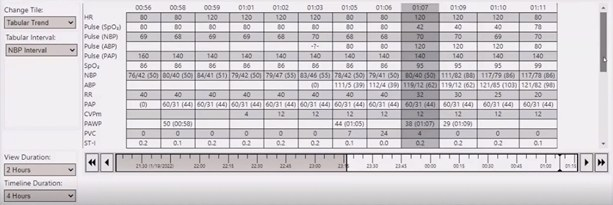
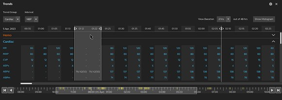
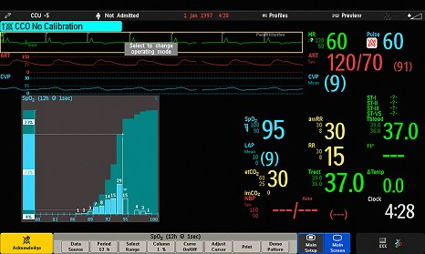
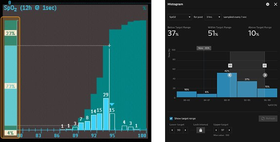
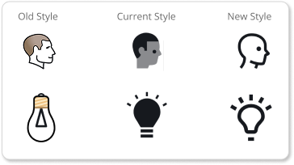
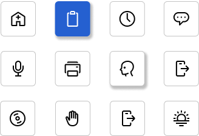
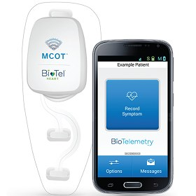
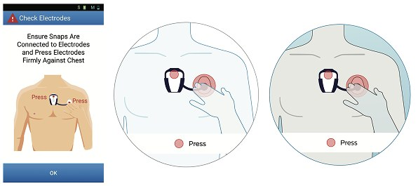
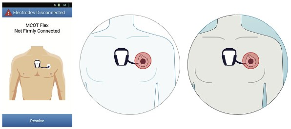

Optimising trend functionality in Patient Information Center iX (PICiX)
PIC iX is Philips' enterprise patient monitoring system for ICUs — used to track vitals like heart rate and blood pressure so clinicians can catch patterns early. It won a Red Dot Award in 2023.
Problem: Usability testing showed nurses could view parameter values, but struggled to compare them over time to spot patterns — critical, since treatment decisions ride on these trends.
I translated the research findings into the redesigned trends screen — grouped vitals for easier comparison, a dark UI to reduce eye strain in ICU lighting, and a timeline that now surfaces alarm frequency, so clinicians can spot when critical moments happened at a glance. A new histogram view also lets them see patterns in vitals like heart rate or SpO2 over time.


Old table view (left) vs. redesigned trends screen (right) - grouped vitals, dark UI, and histogram view replace a flat, hard-to-scan table.
Projected to improve task efficiency by 30%.
The redesign addressed four key issues: application complexity, lack of customisation, unmet specialised information needs, and accessibility — through prioritised controls, grouped vitals, histogram views, and a dark UI.
Design adaptation gains momentum when rooted in familiarity
Talking with the clinical team made it clear: change needs to build on what's familiar, not replace it. With a monitor nurses rely on constantly, the goal wasn't reinvention — it was refining what worked while keeping the learning curve near zero.
Improving how clinicians read patient data distribution in PIC iX
Histograms are a feature within PIC iX and IntelliVue (Philips' patient monitor) showing how a patient's vitals — like SpO2 — have distributed over time, helping clinicians see how long a patient stayed within a target range and whether treatment is working.

Old design — histogram embedded in the full monitor screen, with target range shown only as a highlighted column on the left
Problem: The most critical piece — the target range setting — was the hardest part to understand. Clinicians struggled to read how much time a patient spent within, above, or below their target range at a glance.
I worked with the team to test different visual approaches for the target range. One finding shaped the whole redesign: placing bars from bottom to top, rather than left to right, made the data distribution far easier to read without needing to check the axis labels.

Old design (left) — target range shown as a highlighted column, hard to parse at a glance. New design (right) — clear percentage breakdown (below/within/above target) with an interactive range selector.
Tested with 10 clinical team members — most understood the target range immediately in the new design. Settings integration remains an area for further refinement.
Crafting a new icon style across Philips healthcare products
Philips healthcare uses thousands of icons to simplify complex clinical information. With around 5,000+ icons across the system, updating the style was a significant undertaking — but existing filled icons were causing visual clutter, poor contrast, and inconsistency across screen sizes, especially in dense clinical interfaces.

Old and current filled icons vs. the new linear style — thinner lines, open shapes, and higher contrast against dark backgrounds.
I contributed to the new icon style — designing individual icons within the updated linear system and helping shape guidelines for consistency across the library.

A sample of the new linear icon set.
Icons are built on a shared grid system for consistent sizing and alignment across the full library.
Design with empathy, precision, and impact
Designing the CPR icon taught me this directly. My first version showed the procedure literally — but in an ICU, where patients and families see the screen, that could cause panic. The version we shipped uses an abstract symbol clinicians recognize, without alarming the people beside the bed.
Design proposed for CPR
Design used for CPR
Adapting device-setup illustrations to Philips' visual guidelines
BioTel's app walks patients through setting up and troubleshooting their cardiac monitor at home — replacing electrodes, charging the device, checking connections — through illustrated step-by-step screens. I was brought on to bring these illustrations in line with Philips' visual design guidelines, working solo and reporting directly to the Product Head.

MCOT — BioTel's wearable cardiac monitor, paired with the BioTel Heart app patients use at home.
Working through the illustrations, I found that showing a solid hand over the electrode patch hid the product detail underneath — something patients actually need to see clearly to complete the step correctly. I made the hand translucent instead, so the instruction stays clear without sacrificing product visibility.

Original app illustration (left) and two of my iterations exploring neutral body color. In an earlier draft, the hand fully covered the electrode — I made it translucent in both versions here, so the detail stays visible while pressing.

The same color exploration applied consistently across the disconnected-electrode screen.
An open question, left unresolved
One open question we never resolved: moving away from a specific skin tone (as in the original) toward a neutral body color raised its own problem — a teammate felt the blue option read as unwell, even "poisoned," rather than neutral. We explored an alternative grey tone but hadn't settled on a direction before the project was paused.